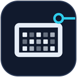

deskpal
An ESP32 desk display: the time, the weather, your room and your GitHub grid.
GNDVCCSCLSDA

I2C to the ESP32SCL to GPIO 22
SDA to GPIO 21
SSD1306, 128×64. Four screens, eight seconds each.

An ESP32 desk display: the time, the weather, your room and your GitHub grid.
I2C to the ESP32SCL to GPIO 22
SDA to GPIO 21
SSD1306, 128×64. Four screens, eight seconds each.